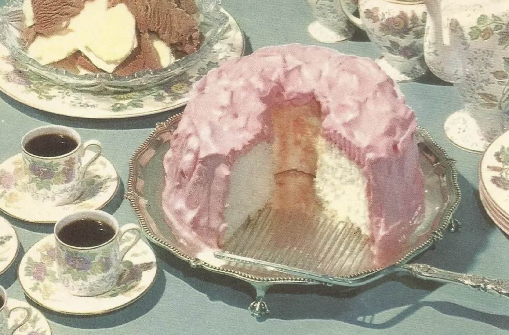

Angel Food Cake

Description
This classic Angel Food Cake is incredibly light, airy, and delicately sweet. Made without butter or oil, it relies on whipped egg whites to create its signature fluffy texture, making it a perfect dessert for any occasion.
Ingredients
- 1 cup sifted cake flour
- 1 teaspoon cream of tartar
- 1 cup egg whites
- 1 ¼ cups sugar
- 1/4 teaspoon salt
- 1 teaspoon vanilla
Steps
- Set oven for moderately low, 325°F.
- Sift flour 4 times.
- Whip egg whites until frothy; add salt and cream of tartar; whip until stiff but not dry.
- Sift 2 tablespoons sugar over egg white mixture; fold in. Continue until sugar is all added. Fold in vanilla.
- Sift small amount flour over mixture; fold in gently. Continue until all flour is added.
- Pour into an ungreased 9-inch tube pan.
- Bake 1 hour and 15 minutes or until top springs back when touched with fingertip.
- Invert pan; let cake hang till cold.
- Loosen from sides and tube with a spatula.
- Frost, if desired, with Pastel Plum Frosting, or sprinkle with confectioners' sugar.
- Makes 1 cake.
PASTEL PLUM FROSTING: Combine 1/3 cup plum jelly, 1 egg white, and few grains salt in the top of a double boiler. Whip with an electric mixer or rotary beater until mixed. Set over boiling water and beat constantly 3 minutes or until frosting stands in peaks. Cool. Spread on cake.
Note: Any tart jelly, such as currant or grape can be used.